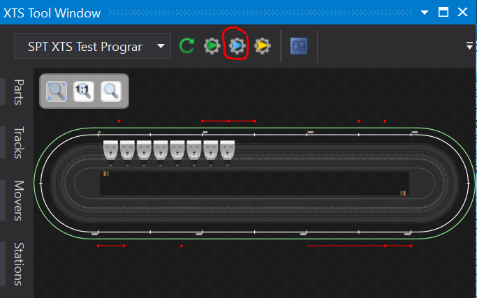
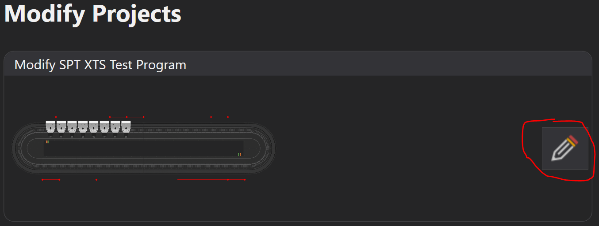
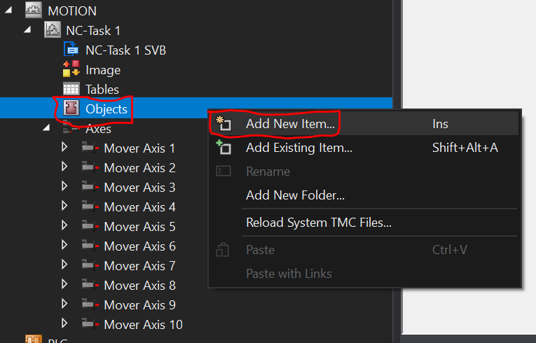
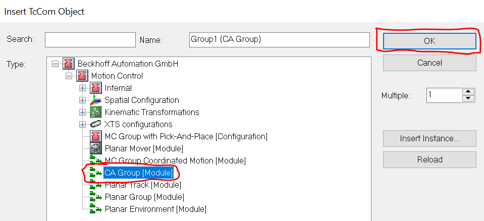
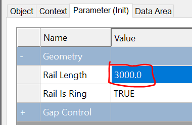
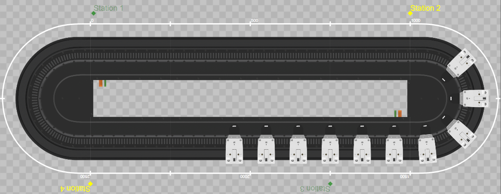
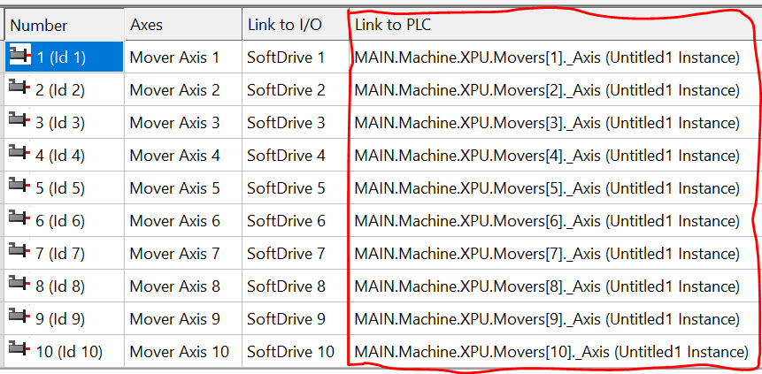
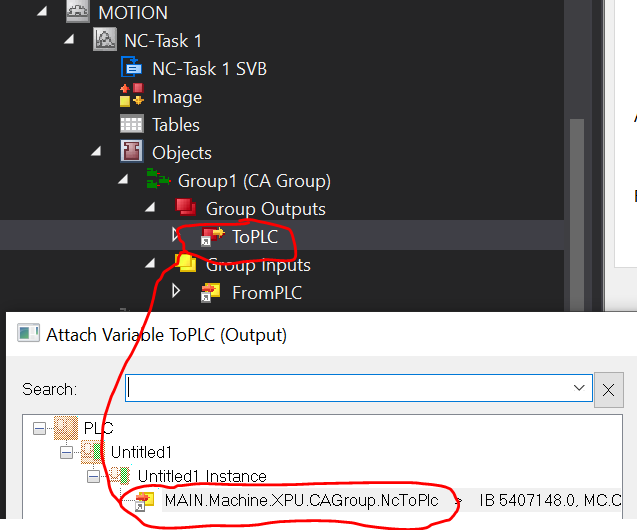
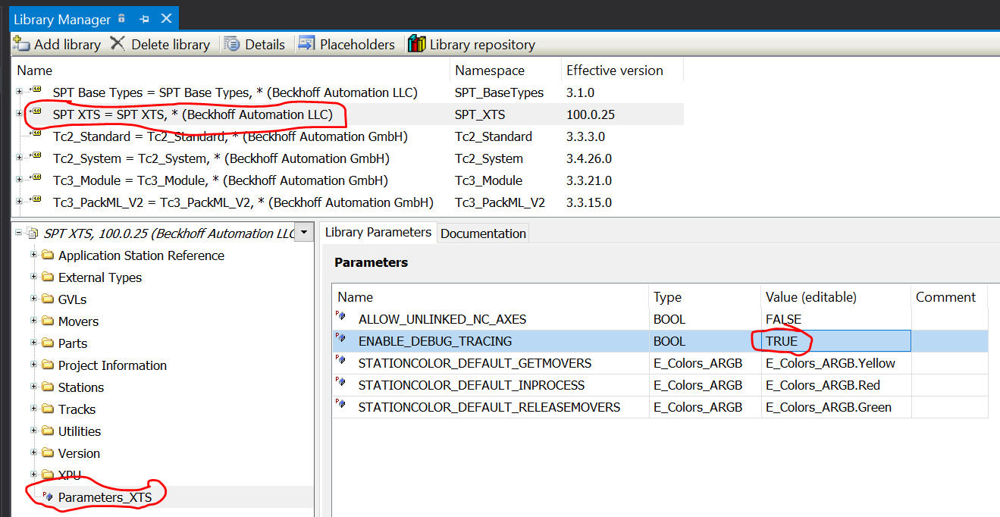
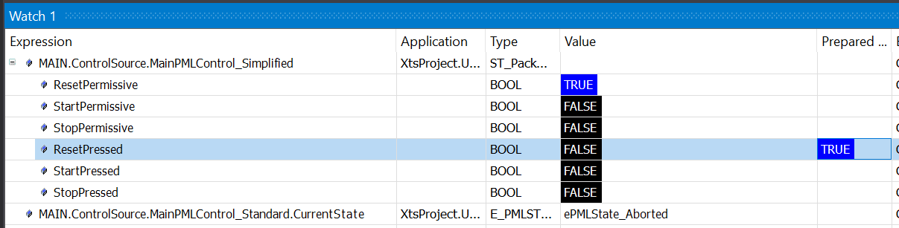

QuickStart
Intial Setup
This process can take a few different paths, but the end goal is to have the XTS system laid out in your TwinCAT project. This layout should include:
- Realtime Configuration
- PLC Task
- XTS Task(s) (250us cycle time)
- Proper core allocation
- TcCOM Objects
- XPU - Parts, Tracks, Movers
- InfoServer - Station definitions including stop positions
- NC Configuration
- Collision Avoidance TcCOM object
- Track length matching XPU track length
- Mover Axes with correct SoftDrive configuration/links
- EtherCAT configuration
- Motor modules as children of EtherCAT masters
- Masters may be disabled for execution in simulation mode
- Distributed clock timing checked and correct
Simulation Mode
Hardware configuration for simulation mode can be easily built using the XTS Simulation Builder:

No TwinCAT project loaded
The simulation builder includes template options for quickly building common track layouts:

Adding XTS to existing TwinCAT project
Use Modify Projects to build a track layout by hand and add it to an existing TwinCAT project

Hardware in hand
If running on real XTS hardware, refer to InfoSys for detailed configuration steps.
CA Group Configration
A collision avoidance group object must be added to the NC configuration:


CA group must be parameterized. Rail length must match the actual XTS track length:

Application Programming
This example will use the SPT PackML method of machine organization and programming but realize that there is no formal requirement for PackML to be involved to use the XTS component.
The steps below assume the following configuration, but can be easily adapted to suit a variety of different setups: - 3000 MM oval-shaped track using clothoid ends - 1 Part - 1 Track - 10 Movers - 4 Stations - Station 1: Queue - Station 2: SimpleStation, 1 stop position - Station 3: Queue - Station 4: SimpleStation, 1 stop position

Add a PLC project and reference the required libraries: - SPT Base Types - SPT XTS - Tc3_XTS_Utility - Tc3_PackML_V2
FB_Machine
Create a function block FB_Machine which extends FB_PackML_BaseModule. Instantiate FB_Component_XPU and station equipment modules. Create configuration structures for each of the stations as well as an array for assigning the station instances to the XPU during initialization. This function block will serve as our Machine Module, or the root of the control structure.
1 2 3 4 5 6 7 8 9 10 11 12 13 | |
Method Overrides
We must have an initialize routine to make some assignments and to perform some setup tasks. FB_PackML_BaseModule already has an Initialize() method that we can override. We must also override some of the acting state methods of FB_PackML_BaseModule in order to modify the default behavior. Aborting(), Clearing(), Resetting(), and Stopping() should be overriden.
Initialize()
Basic parameterization and assignment are done in the Initialize() method. Note in particular the lines StationConfig_Station1.IsAQueueStation := TRUE; and StationConfig_Station3.IsAQueueStation := TRUE;. These bits indicate to the XPU component that during a cold start with no mover assignment backup data source, stations 1 and 3 are candidates for serving as a starting point where movers will be sorted and assigned to.
1 2 3 4 5 6 7 8 9 10 11 12 13 14 15 16 17 18 19 20 21 22 23 | |
Aborting()
The default behavior of Aborting() does not know anything about the XPU's Disable() method. Here we first disable the XPU component if required and then allow the base Aborting() method to continue with the rest of the equipment modules and components.
1 2 3 4 5 6 7 8 9 10 11 12 13 14 15 | |
Clearing()
The default behavior of Clearing() does not call Reset() on components that do not have errors. Because mover assignment recovery is triggered by the Reset() method, we must make sure it is called regardless of error state. Default behavior can resume afterward.
1 2 3 4 5 6 7 8 9 10 11 | |
Resetting()
Similar to the case of Aborting() above, the XPU has an Enable() method which builds the CA group, enables mover axis, etc. which much be called.
1 2 3 4 5 6 7 8 9 10 11 | |
Stopping()
The default behavior of Stopping() only handles issuing a stop command to equipment modules. We also want to disable the XPU component after reaching this state.
1 2 3 4 5 | |
1 2 3 4 5 6 7 8 9 10 11 12 13 14 15 16 17 18 19 20 21 22 23 24 25 26 27 28 | |
MAIN POU
Now that we have created our machine module and overridden the default behavior of FB_PackML_BaseModule as required, we can introduce it into the cyclic program logic.
The default PLC project template in TwinCAT XAE will create a MAIN POU and attach it to the default PlcTask. This will be the entry point for our program.
Instantiate FB_Machine and FB_ControlSource. FB_ControlSource simply provides a quick and easy means for commanding the machine module to different states and provides feedback on current machine module status.
1 2 3 4 5 | |
We must attach ControlSource to the machine module so that it knows what it's controlling. We must also make the calls to CyclicLogic() for both our machine module and ControlSource:
1 2 3 4 5 6 | |
Linking process data to PLC
At this point you should be able to build the PLC project with no errors. Doing this also will let XAE know of any allocated variables (%I*/%Q*) in our program and allow us to link them to other TwinCAT modules.
NC Axes
The XPU component contains an array of mover function blocks (upper bound set in the Tc3_XTS_Utility library TcIoXtsEnvironmentParameterList.MaxXtsMoversPerXpu). These must be linked to our NC axes. Note the array starts at index 0 for internal reasons, but mover 0 is never actually used. Start at mover 1.

CA Group
The XPU component also contains the necessary AXES_GROUP_REF which must be linked to our collision avoidance group TcCOM object.


Tracing
The XPU component emits a great deal of debug information to the Event Logger, which can be useful for debug. By default, this messaging is turned off in order to not bog down the development environment. During the initial commissioning it can be re-enabled through the library parameters:

Results
At this point we should be able to activate the configuration, restart in Run Mode, and Login to the PLC. Adding the following variable to the Watch window gives us convenient place to monitor the progress.

ControlSource.MainPMLControl_Simplified.ResetPressed, StartPressed, and StopPressed can be toggled manually to advance through the PackML states. These can also be tied to buttons on a Visualization or TwinCAT HMI screen, for example.
Varying Configurations
In this example, Stations 2 & 4 are type FB_XTS_SimpleStation. This example function block includes a property SimulatedProcessTime which controls a timer which begins counting when all movers have arrived at their stop position(s) and upon expiration signals the station to release all movers to the next neighbor. A variety of processes can be simulated by varying this time setpoint, as well as defining multiple stop positions using the XTS Configurator.
Stations 1 & 3 are type FB_XTS_QueueStation. This example function block includes a property MaxNumberOfMovers which controls how many movers are allowed into the station's mover buffer at one time. Note that even though the XTS Configurator allows for multiple stop positions to be defined, FB_XTS_QueueStation will only command movers to move to the first stop position. Any other stop positions are ignored.
Custom Stations
FB_XTS_SimpleStation and FB_XTS_QueueStation are provided for reference only. They represent the most basic types of station logic that may be part of an XTS system. Custom station logic can be implemented from scratch, or with help from inheriting FB_XTS_StationBase. FB_XTS_StationBase is an ABSTRACT function block which contains the basic components that one would use to implement a custom station type.